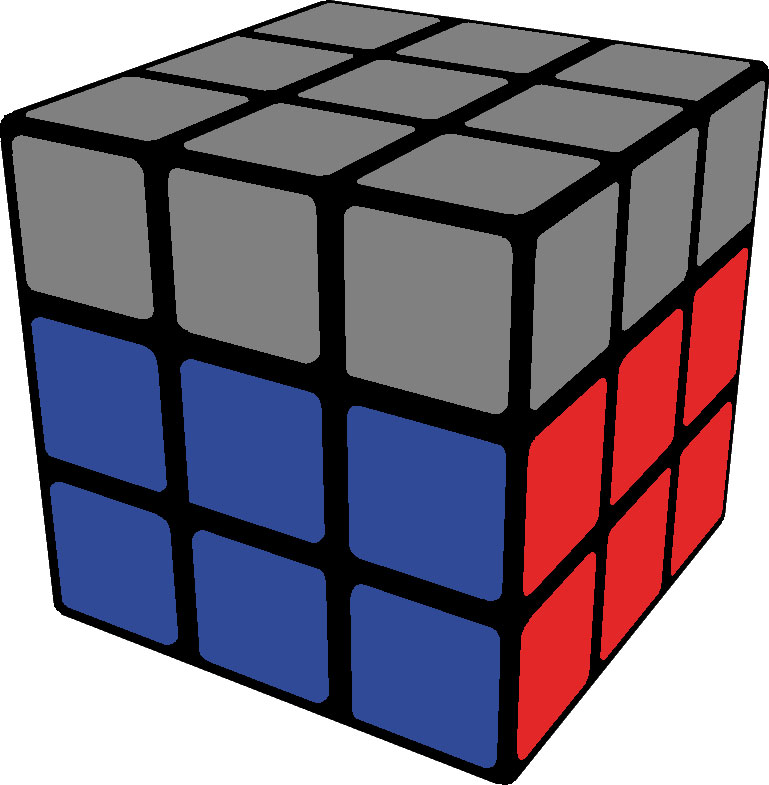

Étape 2 : Les deux premières couches
L'étape F2L consiste à résoudre les deux premières couches simultanément en plaçant les coins et les arêtes correspondants.
Instructions:
- Identifier les paires coin-arête : Recherchez les coins et arêtes qui vont ensemble.
- Insérer les paires : Utilisez une série de mouvements pour insérer ces paires dans leur position correcte sans perturber la croix.
Conseils: Apprenez les algorithmes de base pour chaque cas de F2L. Pratiquez les insertions jusqu'à ce que vous puissiez les faire sans réfléchir.
voila une video qui va vous permettre de faire vos F2l intuitivement
https://www.youtube.com/watch?v=Ar_Zit1VLG0 